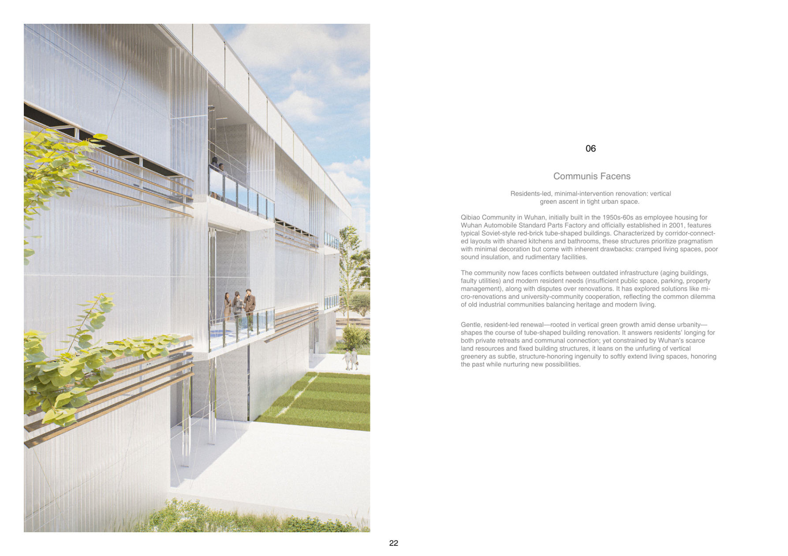
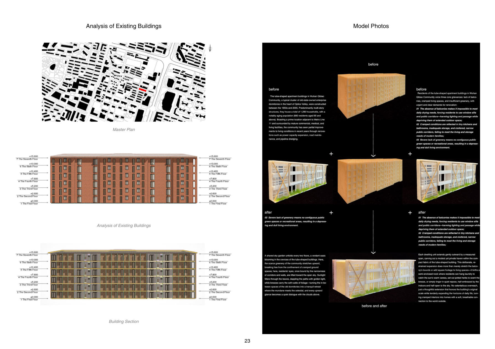
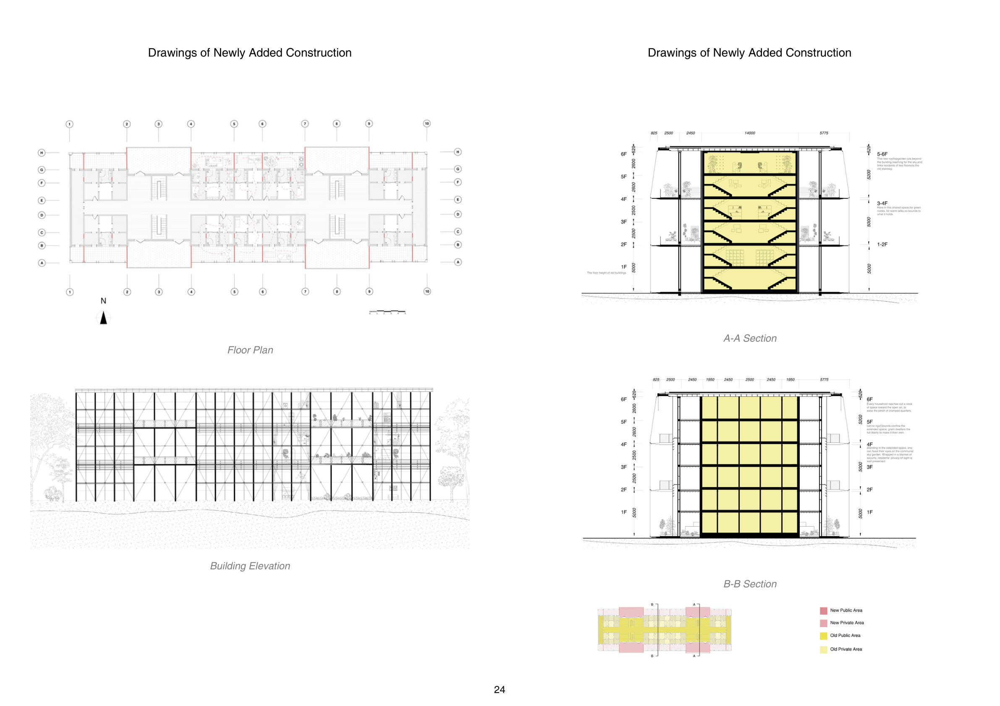
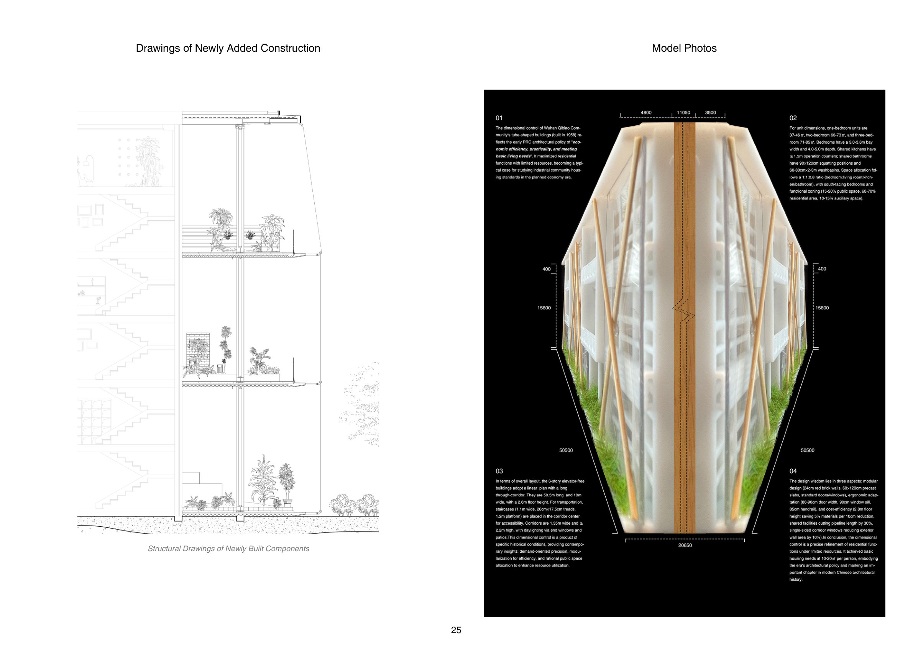

Residents-led, minimal-intervention renovation: vertical green ascent in tight urban space.
Qibiao Community in Wuhan — built in the 1950s–60s as employee housing with Soviet-style red-brick tube-shaped buildings — now faces conflicts between outdated infrastructure and modern resident needs: cramped spaces, insufficient public space, and disputes over renovation.
This gentle, resident-led renewal answers residents' longing for both private retreats and communal connection. Constrained by Wuhan's scarce land and fixed structures, it leans on the unfurling of vertical greenery as subtle, structure-honoring ingenuity — softly extending living spaces, honoring the past while nurturing new possibilities.



